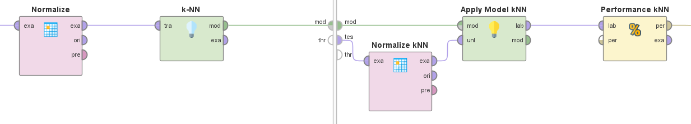

Titanic:
Image extracted from: https://historia.nationalgeographic.com.es/a/historia-titanic-tragedia-barco-insumergible_16344
In this section, we will be working with a dataset containing information about Titanic passengers. Our ultimate goal is to provide a machine learning model that allows us to make a sufficiently accurate prediction of whether the passenger survives the catastrophe or not.
The dataset provided includes the following information:
- Survived: Target variable, indicates if the individual survived the catastrophe. (Binomial: yes, no)
- Passenger Class: Ticket class, indicates the class of the ticket (Nominal: First, second, third).
- Name: Name of the passenger.(Nominal).
- Sex: Male or Female(Binomial: F, M).
- Age: Age of the passenger in years(Numerical).
- Number of siblings or spouses on board: Number of siblings or spouses aboard the Titanic(Numerical).
- Number of parents or children on board: Number of parents or children aboard the Titanic(Numerical).
- Ticket number: Ticket number(Nominal).
- Passenger fare: Passenger fare(Numerical).
- Cabin number: Cabin number(Nominal).
- Port of embarkation: Port of embarkation (Nominal: Cherbourg, Queenstown, Southampton).
- Life boat: Boat the passenger got at the moment of the catastrophe(Nominal).
Data Preparation
Once the meaning of each variable was understood, the data preparation process began. For this, we started with the treatment of missing values, where there were some severe cases. This is the case of the "Cabin" and "Lifeboat" attributes. The dataset contains approximately 1300 samples, and in 1000 of these samples, the "Cabin" attribute is not provided. Due to the high number of missing values, there was no choice but to discard the entire column, as it was not feasible to insert these missing data. This could potentially alter the reality represented by the dataset. The other attribute that was decided to be removed from the dataset was "Lifeboat." It also had a large number of missing values, specifically 823. However, even if this variable had no missing values, it would have been removed due to its close relationship with the target variable and because it's data that cannot be provided before the catastrophe.
Once these 2 columns were removed from the dataset, we only have to deal with a few missing values, which mostly belong to the "Age" variable. This attribute initially seems interesting and is believed to have the potential to add value to the model. Therefore, a simple imputation of the mean of the attribute's values was performed as a solution to the missing values. This is not the best approach, but it is a quick one with a decent level of effectiveness. Ideally, inserting values that make sense in the context of the rest of the sample would have been preferable.After this, there are only 3 missing values remaining, which received the same treatment as "Age".
Three more columns that were also removed are "Ticket number", "Name" an "Port of embarkation" because they do not provide relevant information to the model and would serve as simple sample identifiers.
Outliers and Distributions
Visualizing the distribution graphs of each attribute, there are outliers present in some of them, such as "Number of siblings or spouses on board," "Number of parents or children on board," and "Passenger fare." Initially, due to a lack of knowledge about lifeboat boarding rules, it was decided not to remove these outliers in the first instance. Later, a comparison will be made with another model in which they are removed.
The distributions of the attributes are somewhat unique, so it's not ruled out the possibility of applying attribute normalization, especially in the case of using a distance-based algorithm such as k-NN.
Modelado
After completing the necessary data preparation, it's time to begin the selection of the appropriate modeling algorithm. To do this, we first need to understand the nature of the problem. In this case, the goal is to predict the value of the "Survived" variable, which can take values "yes" or "no," corresponding to a supervised classification problem where the target variable is binary. In the context of such problems, an algorithm that is commonly involved is Logistic Regression. In addition to Logistic Regression, we will compare results with Naive-Bayes and k-NN models.
We will proceed to explain the modeling process for the k-NN algorithm. As previously mentioned, models of Naive-Bayes and Logistic Regression will also be trained to compare results.

Here is the design of the modeling for the three algorithms mentioned earlier. In this process, you can see blocks that handle data preprocessing as described at the beginning of this section, along with blocks for "Cross Validation," an excellent technique for partitioning the dataset into test and training subsets. The functioning of the cross-validation technique ensures that we make the most of the dataset's samples when they are not abundant, as is the current case.
Within each of these blocks, you will find the part of the process where the model is trained, evaluated, and metrics are obtained. As it can be seen on the next image.
One thing to note in this part is the normalization blocks, these are necessary because of the use of distances by the k-NN algorithm. Without normalization, some attributes would disproportionately influence the prediction.
After executing this process, the following performance values are obtained.
k-NN Algorithm:
Logistic Regression Algorithm:

Naive-Bayes Algorithm:
Conclusion
In conclusion, the process discussed involves data preparation, modeling, and evaluation of three algorithms: k-NN, Naive-Bayes, and Logistic Regression for a supervised binary classification problem. Through the use of cross-validation techniques and the careful selection of algorithms, it was found that the k-NN algorithm appeared to be the most efficient for the problem as it was modeled. It's important to note that this is just an initial step, and there is always room for further refinement, optimization, and exploration of different approaches. This initial modeling serves as a valuable starting point for future evaluations and improvements.